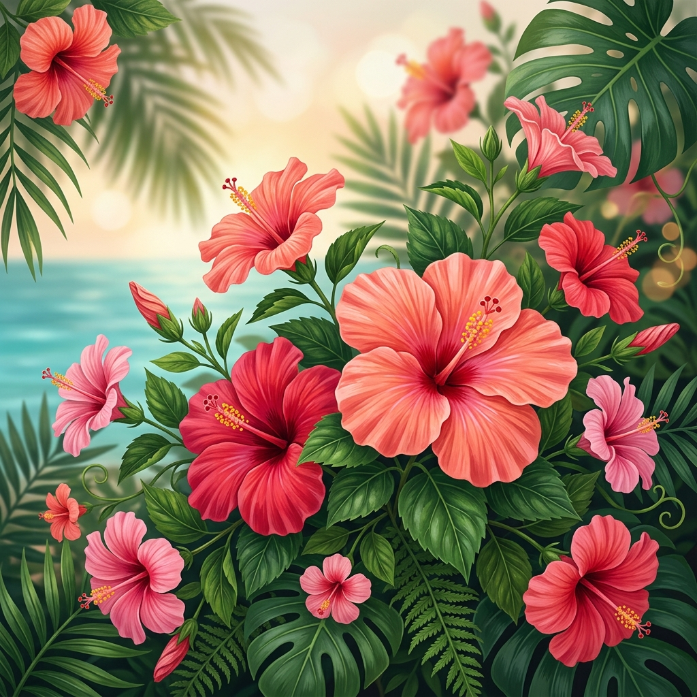

A nuestro ritmo
Sin presiones, disfrutando el momento y cada detalle que nos hace ser quienes somos hoy.

Un pequeño detalle para recordarte lo especial que eres.
Hay días en los que todo fluye con una facilidad increíble, de esos donde parece que el tiempo se detiene solo para nosotros. Y también hay otros, un poco más enredados, en los que parece que hablamos idiomas distintos. Sé que a veces me encierro en mis silencios, que mis "cables cruzados" aparecen de la nada y que nuestra historia no sigue precisamente una línea recta. Pero, si te soy sincero, no cambiaría nada de eso. Me gusta lo que tenemos, así de real, así de espontáneo y así de nuestro.
No busco algo perfecto ni de manual; prefiero mil veces nuestras idas y vueltas, porque cuando logramos conectar, la pasamos genial. Es en esos momentos donde me doy cuenta de que cada minuto compartido vale la pena. Me guardo cada detalle como algo muy valioso: desde las risas que se nos escapaban en el viaje a Arica, hasta esos audios de cuentos que me mandas y que logran que me olvide de todo cuando más lo necesito.
Incluso esos momentos que parecen pequeños son mis favoritos. Como esos cinco minutos en los que paso por el hospital solo para dejarte un café y verte un instante; ese pequeño cruce de miradas me cambia el día por completo. O recordar tu cara cuando viste aquel girasol; detalles que me confirman que, a pesar de cualquier racha gris, lo que vivimos tiene una chispa que no se encuentra en cualquier parte.
Gracias por la paciencia que tienes para entender mis tiempos y por elegir seguir compartiendo los tuyos conmigo. Gracias por dejar que esto avance a nuestro propio ritmo, paso a paso, descubriéndonos sin presiones y disfrutando del presente, que es lo que realmente importa.
Sin presiones, disfrutando el momento y cada detalle que nos hace ser quienes somos hoy.